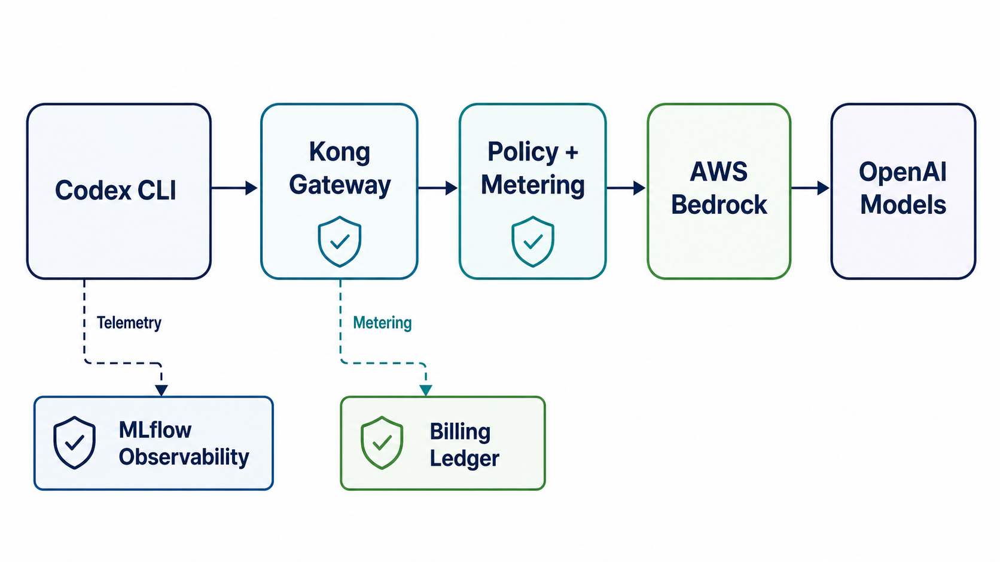
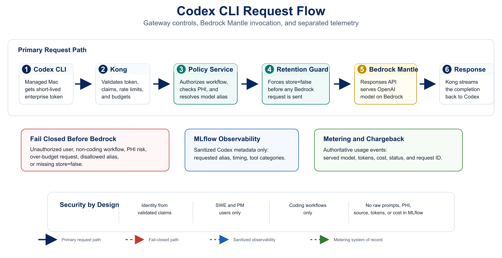
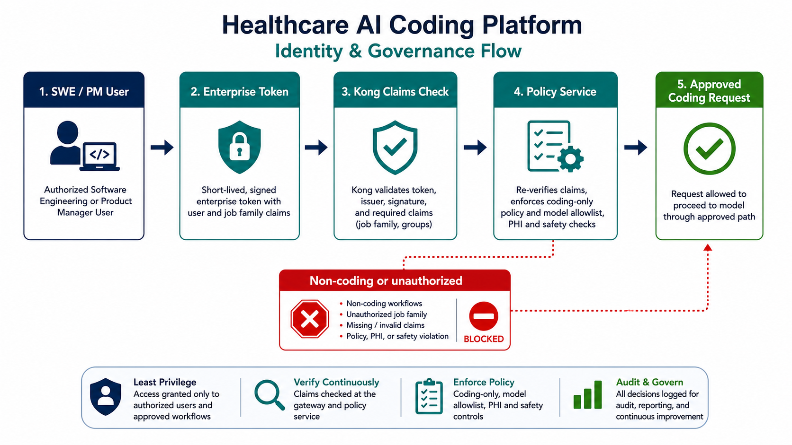
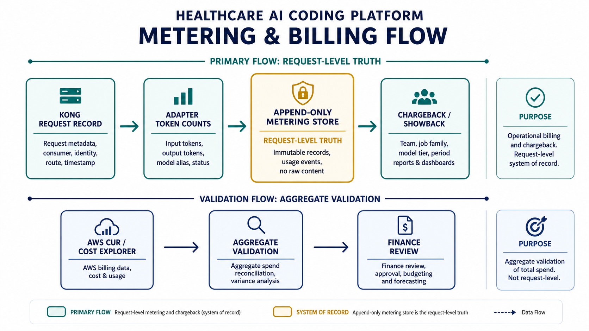
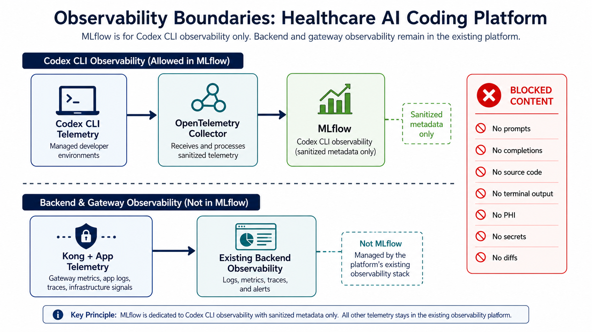
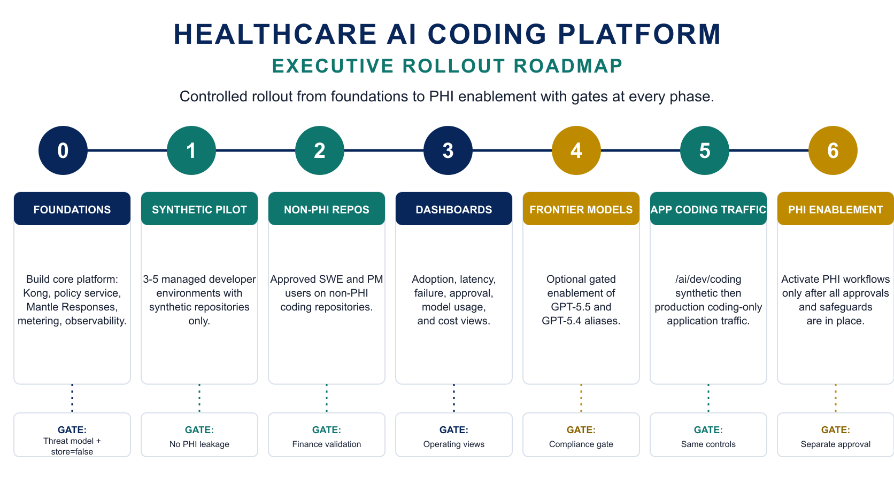

Executive Plan: Healthcare AI Coding Platform
A controlled rollout for Codex CLI and coding-only AI workflows using Kong, AWS Bedrock-hosted OpenAI models, usage metering, and sanitized Codex observability.
1. Summary
The platform routes model traffic through Kong. Codex CLI runs on managed macOS developer environments, uses a Kong-fronted provider, Kong enforces identity and policy, a coding policy service forwards approved Responses-format requests to Amazon Bedrock Mantle, and all usage is metered for billing and audit.
MLflow is limited to sanitized Codex CLI observability. Backend, Kong, and application observability remain in the organization's existing observability stack.

2. Executive Architecture

Sequence view: policy failures stop before Bedrock; MLflow receives only sanitized Codex telemetry, while served-model and cost facts go to metering.
3. Supported Scope
4. Model Strategy
AWS Bedrock is the regulated runtime for both open-weight and frontier OpenAI models. GPT-5.5, GPT-5.4, and Codex from OpenAI are generally available on Amazon Bedrock as of June 1, 2026. Clients use simple aliases; raw Bedrock Mantle model IDs are resolved server-side.
| Alias | Model | Use | Availability |
|---|---|---|---|
coding-economy |
openai.gpt-oss-20b |
Lower-cost tests and simple coding tasks | GA; gated Approved region, account access, endpoint availability, and quotas required. |
coding-standard |
openai.gpt-oss-120b |
Default coding assistant model | GA; gated Approved region, account access, endpoint availability, and quotas required. |
coding-frontier |
openai.gpt-5.5 |
Higher-complexity coding workflows | GA; gated Healthcare approvals, budgets, quotas, and route controls required. |
coding-frontier-p |
openai.gpt-5.4 |
Secondary frontier evaluation | GA; gated Same healthcare controls. |
Sources: AWS GA announcement, OpenAI latest-model guide, OpenAI Amazon Bedrock guide.
5. Bedrock Responses Integration
Codex CLI speaks the OpenAI Responses wire API. Amazon Bedrock now exposes the OpenAI Responses API through the Bedrock Mantle endpoint, so the production path forwards approved Responses-format requests instead of translating them to Converse.
/openai/v1/responses with store=false -> Responses-format stream back to Codex.store=false because AWS documents that this setting prevents Bedrock from retaining request or response data.
Sources: AWS Bedrock Mantle Responses API, AWS supported API patterns, OpenAI Bedrock Responses examples.
6. Identity and Authorization
Kong validates the token and the policy service re-checks identity claims. Client-supplied identity headers are stripped or ignored.

Simple view of the claims-based control path: identity is validated before any model request is allowed through.
7. Metering and Billing
Billing is separate from MLflow. The append-only metering store is the request-level system of record; AWS billing data is used as an independent aggregate check.

Request-level usage comes from the metering store. Aggregate validation compares rolled-up metering totals against AWS billing totals to catch drift, missing events, pricing mismatches, or attribution errors.
- Soft caps alert and throttle. Hard caps fail closed.
- Daily showback and chargeback are grouped by team, job family, and model tier.
- Aggregate validation rolls up metering records by day, team, model tier, and region, then compares those totals to AWS CUR or Cost Explorer.
- AWS billing does not replace the metering store; it validates aggregate spend, not per-request usage.
8. PHI Detection and Data Protection
PHI is prohibited until the healthcare organization completes BAA, HIPAA eligibility, compliance, logging, and security approvals.
store=false.
Sources: AWS Bedrock Mantle retention behavior, AWS HIPAA Eligible Services Reference.
9. Resilience and Fallback
The resilience posture keeps availability problems controlled without weakening authorization, PHI, budget, or retention controls.
coding-frontier
GPT-5.5 / GPT-5.4 when approved.
coding-standard
Default approved coding model.
coding-economy
Lower-cost fallback for simple tasks.
store=false, and policy failures stop before Bedrock.
10. Observability
MLflow observes only sanitized Codex CLI telemetry. It is not used for application observability or billing.

MLflow is intentionally scoped to sanitized Codex CLI metadata; application telemetry stays in the existing backend observability stack.
11. Kong Platform and Routes
Kong is deployed in self-hosted hybrid mode with the data plane inside the healthcare AWS/VPC boundary.
/codex/v1/responses
/ai/dev/coding
12. Coding Policy Services
- Re-validate job-family and workflow authorization from token claims.
- Resolve
coding-*aliases to Bedrock Mantle model IDs server-side. - Enforce
store=falseand invoke Bedrock Mantle Responses. - Emit authoritative usage to metering.
- Reject clinical, patient-facing, revenue-cycle, or operational healthcare requests.
13. Bedrock Integration
Bedrock is the regulated model runtime. The policy service is the only approved caller and enforces route, model, region, and retention controls before invocation.
store=false before it leaves the policy service.
bedrock-mantle:CreateInference
approved model IDs
approved regions
CloudTrail validation
Sources: AWS Bedrock Mantle docs, AWS HIPAA Eligible Services Reference.
14. Rollout Sequence

The rollout uses explicit gates; each phase requires signoff before the next phase starts.
| Phase | Scope | Executive Gate |
|---|---|---|
| 0. Foundations | Build Kong, policy service, Bedrock Mantle Responses integration, metering, OTel to MLflow. | Threat model; gpt-oss region, access, endpoint, and quota readiness; Mantle Responses load test; store=false enforcement; metering reconciliation; managed Mac local-retention evidence; kill switch. |
| 1. Synthetic Pilot | 3-5 managed macOS developer environments, synthetic repos only. | No PHI leakage in logs, MLflow, metering, or unmanaged local endpoint artifacts; auth fail-closed; budgets enforce. |
| 2. Non-PHI Internal Repos | Approved SWE and PM users on non-PHI coding repos. | Finance validates showback, Risk and Privacy accept residual risk. |
| 3. Dashboards | Adoption, latency, failure, approval, model usage, and cost views. | Dashboards answer required operating questions. |
| 4. Frontier Models | Optional gated enablement of frontier aliases. | openai.gpt-5.5 and openai.gpt-5.4 access, compliance sign-off, BAA/HIPAA eligible-service review, quotas, route controls, and budgets set. |
| 5. Application Coding Traffic | /ai/dev/coding synthetic then production coding-only app traffic. |
Same authorization, PHI, metering, and resilience controls pass. |
| 6. PHI Enablement | Only if pursued later. | Separate explicit approval by Security, Risk, Privacy, and Legal. |
15. Test Plan
store=false. Converse, InvokeModel, and Chat Completions remain separately approved paths only.16. Assumptions
- Bedrock is the single regulated model runtime.
- Codex CLI runs only on managed macOS developer environments.
- Windows and Linux developer endpoints are out of scope.
- Kong is the front door for Codex and application AI traffic.
- Production integration uses Bedrock Mantle Responses with
store=false; Converse, InvokeModel, and Chat Completions require separate approval. - Client headers are not trusted for identity or authorization.
- Metering and billing are required as the usage and chargeback system of record.
- MLflow observes only sanitized Codex CLI telemetry.
- Supported users are SWE and PM job families only.
- Supported workflows are coding and code-adjacent product-to-engineering workflows only.
- Direct OpenAI API access and Codex Cloud are out of scope.